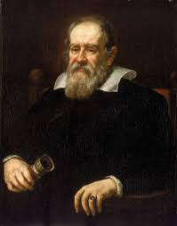

Albert Einstein
Albert Einstein was born in Ulm in the Kingdom of Württemberg in the German Empire, on 14 March 1879. His parents, secular Ashkenazi Jews, were Hermann Einstein, a salesman and engineer, and Pauline Koch. In 1880, the family moved ...
To know more about him
Click Here⇨⇨
Galileo Galilei
Galileo di Vincenzo Bonaiuti de' Galilei (15 February 1564 – 8 January 1642), commonly referred to as Galileo Galilei.Galileo, was an Italian astronomer, physicist and engineer, sometimes described as a polymath. He was born in the city of Pisa, then part of the Duchy of Florence.Galileo has been called the father of observational astronomy,modern-era classical physics,the scientific method, and modern science.
To know more about him
Click Here⇨⇨
Stephen Hawking
Stephen William Hawking, CH, CBE, FRS, FRSA was an English theoretical physicist, cosmologist, and author who was director of research at the Centre for Theoretical Cosmology at the University of Cambridge
To know more about him
Click Here⇨⇨
Nikola Tesla
Nikola Tesla was a Serbian-American inventor, electrical engineer, mechanical engineer, and futurist. He is known for his contributions to the design of the modern alternating current electricity supply system
To know about him
Click Here⇨⇨
APJ Abdul Kalam
Avul Pakir Jainulabdeen Abdul Kalam BR was an Indian aerospace scientist and statesman who served as the 11th president of India from 2002 to 2007. Born and raised in a Muslim family in Rameswaram, Tamil Nadu, he studied physics and aerospace engineering
To know more about him
Click Here⇨⇨